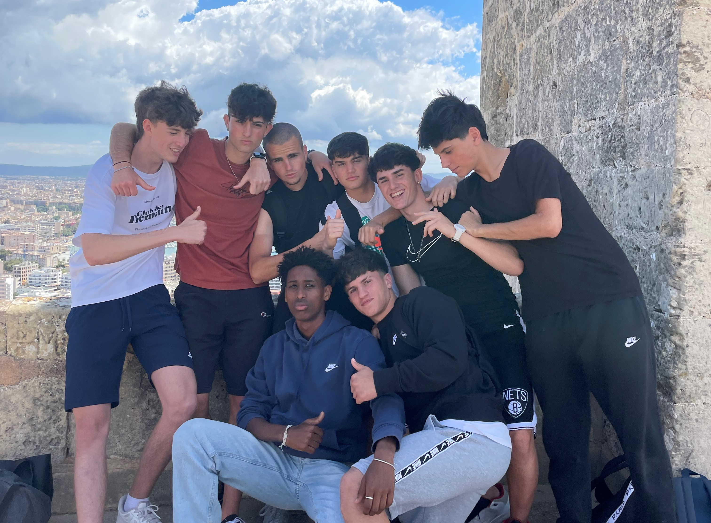
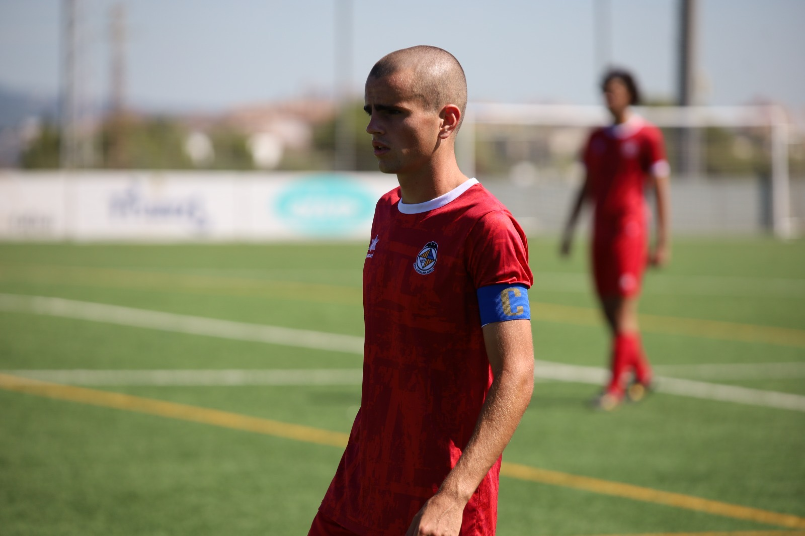

Un chico normal con futuro prometedor
En esta página veremos todo lo que necesitamos saber sobre la vida de Dani Fuster, desde que nació hasta la actualidad.
Actualmente Dani tiene muchos amigos, algunos de ellos son:
Alberto Vega, Joel Obrador, Joan Sastre, Ares, Maia, Dino Salord, etc.
Lo que actualmente más le apasiona a Dani es el futbol.
Hace todo lo posible para que le vaya bien y le dedica mucho tiempo para mejorar.
Dani viene de una familia númerosa, tienes muchos hermanos y hermanas aunque no todos son de mismo padre y madre, algunas de ellos son:
Dami Edibson(2002), Ona Fuster(2004), Duna Fuster(2008), Nuc Fuster(2010) y Noa Fuster(2023).